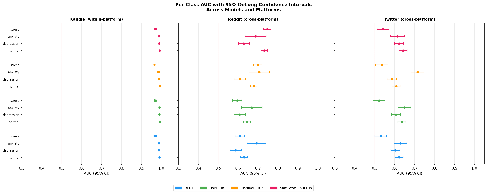
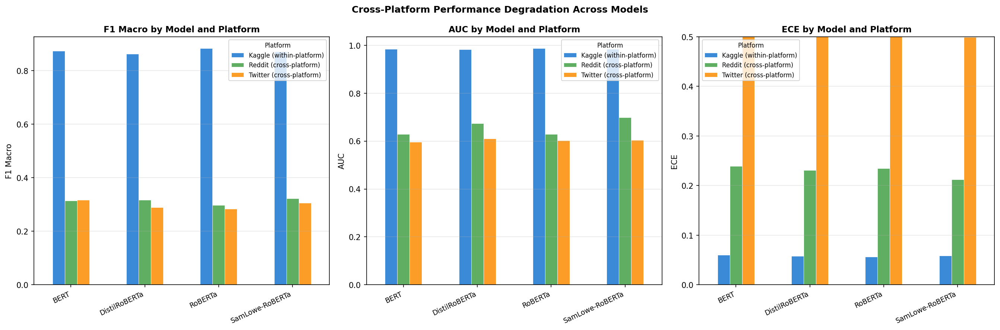
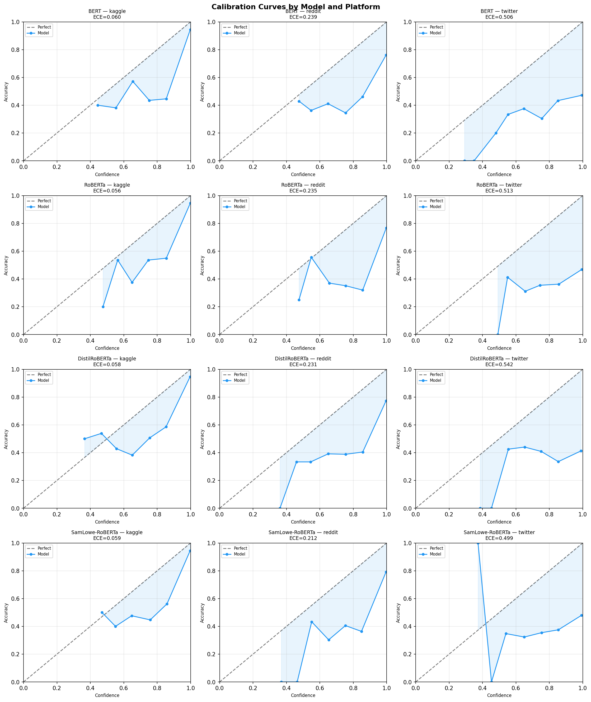

Cross-platform generalisation failure in mental-health NLP — a five-axis Cross-Platform Fairness Evaluation protocol.
Accuracy, calibration, and word-level reasoning all hold up.
AUC falls 30-39%, calibration error rises 9×, and attribution overlap drops to ≈0.10 — different words entirely.
Same model, same task — only the platform changed
Software that scans social-media posts for signs of depression or anxiety is usually trained and tested on a single platform, where it looks near-perfect. We took such models — AUC above 0.98 — and simply moved them to Reddit and Twitter. Accuracy collapsed by a third. Their confidence scores became badly dishonest. Fairness metrics failed for exactly the classes that matter clinically. And the words the models relied on changed almost completely from platform to platform — the model was never reading what its developers thought it was reading.
Mental-health text classifiers that look strong on one social platform fail systematically when deployed on another — and the failure is hidden: accuracy, calibration, and equity all degrade together, but a single aggregate metric reports none of it. What survives when the same model meets a new platform's language?
Five axes audit a family of four transformers (BERT, RoBERTa, Emotion-DistilRoBERTa, GoEmotions) trained on one platform and tested across Reddit and Twitter: discrimination (macro-OvR AUC with DeLong CIs), calibration (ECE), significance (Bonferroni-corrected bootstrap), equity (symmetric disparate impact — the novel axis), and attribution stability (gradient-saliency Jaccard@K).
Under platform shift, AUC falls 30–39%, calibration error rises 9×, minority-class disparate impact drops below 0.17, and token attribution overlap collapses to ≈0.10 — the models attend to entirely different words. Temperature scaling repairs calibration but not discrimination; target-domain fine-tuning recovers far more.
Calibration error (ECE) as the platform changes
Bars drawn at the lower bound of each reported range — the conservative reading.



Labels are clinical proxies from emotion mappings, not diagnoses.
Fairness itself is shown to be a deployment-shift casualty: every trustworthiness axis can fail while the benchmark number stays excellent. The audit makes a failure that aggregate accuracy hides both visible and measurable.